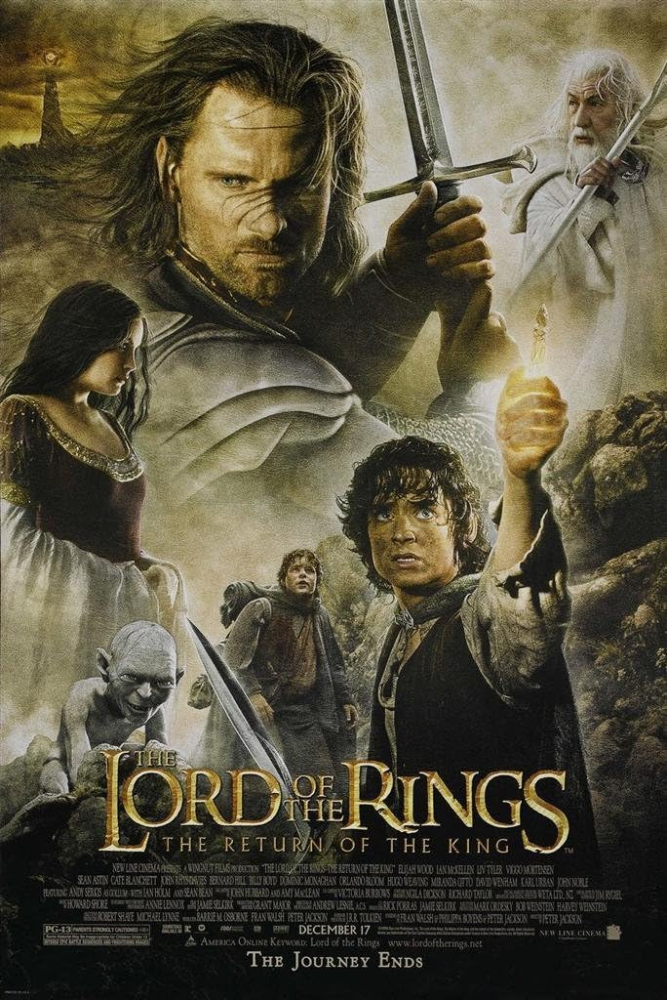

Welcome, {{ session['username'] }}! Logout
{% endif %}{{ current_datetime }}
This is the third and last movie in the Lord of the Rings trilogy. It was released in 2003.
The conclusion of the series. Frodo and Sam are in the depths of Mordor and reach Mount Doom to destroy the ring. They face many dangerous obstacles the closer they get to Mount Doom. Meanwhile, to save the race of Men from their downfall, Aragorn finally accepts his claim to the throne of Gondor to lead a final battle to save Middle Earth. All the Free Peoples left in Middle Earth join forces to bring an end to the era of Sauron's evil reign.
You buy/rent the movie on:
The Fellowship of the Ring The Two Towers Home